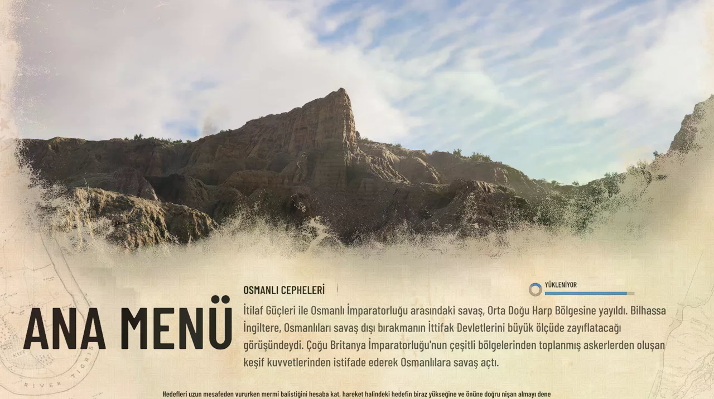
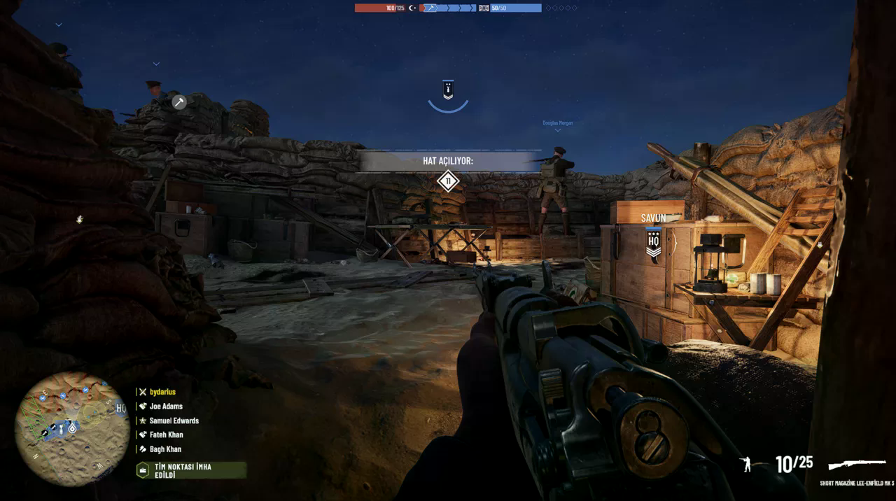
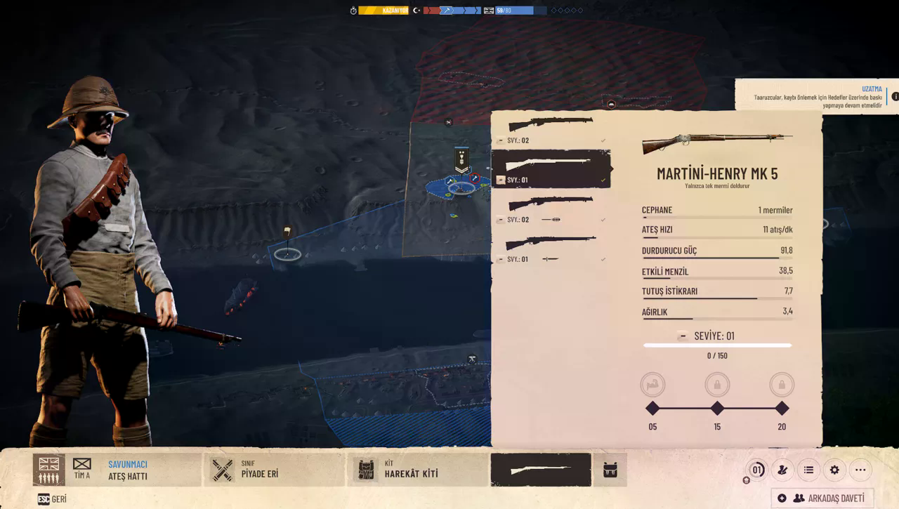
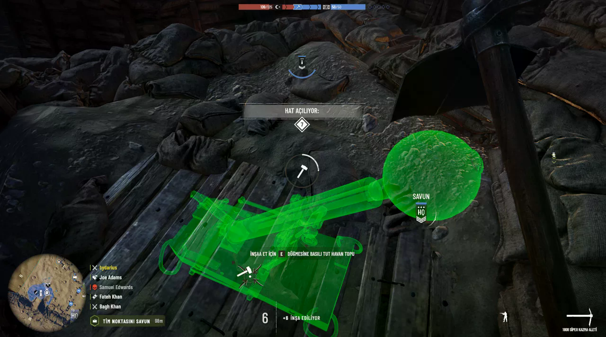

– Gallipoli inceleme yazımızda, Osmanlı Cepheleri’ni merkeze alan bu savaş oyununu; kusurları, atmosferi ve kendine has ruhuyla birlikte değerlendiriyoruz.
Gallipoli, uzun zamandır merak ettiğim oyunlardan biriydi. Birinci Dünya Savaşı
oyunları denince genelde Avrupa cephelerini, çamurlu siperleri, Fransız ya da Alman
askerlerini görmeye alıştık. Bu yüzden odağın Osmanlı Cepheleri’ne çevrilmesi benim
için başlı başına heyecan vericiydi. Çanakkale, Süveyş Kanalı, Kûtü’l-Amâre gibi
isimleri bir FPS oyununda görmek garip bir şekilde tanıdık ama aynı zamanda yeni
hissettiriyor. Oyuna girer girmez de bunu anlıyorsunuz. Gallipoli kusursuz bir oyun
değil, hatta bazı tarafları yeni başlayan oyuncuyu biraz zorlayabilir. Ama ne
anlatmak istediğini bilen, atmosferi güçlü ve özellikle bizim açımızdan ayrı bir
anlam taşıyan bir yapım olmuş.
Gallipoli’yi açtığımda ilk dikkatimi çeken şey menüler oldu. Eski harita dokusu,
sararmış kağıt hissi, cephe görselleri ve tarihsel açıklamalar oyuna daha başlamadan
sizi dönemin içine sokuyor. Ana menüde kocaman bir gemi, kıyıda savaş izleri,
yukarıda cephe sekmeleri ve Türkçe arayüz görünce ister istemez bir durup
bakıyorsunuz. Sıradan bir FPS menüsü değil bu. Biraz arşiv belgesi gibi, biraz müze
panosu gibi.

Bence oyunun en güzel taraflarından biri bu. “Osmanlı Cepheleri” başlığı sadece süs olsun diye konmamış. Süveyş Kanalı Harekatları, Küt’ül Amare Kuşatması, Ertuğrul Koyu Çıkarmaları gibi başlıklar oyunun kimliğini net şekilde ortaya koyuyor. Bizim tarih derslerinde, belgesellerde ya da aile büyüklerinden duyduğumuz bazı cepheleri bu kez oynanabilir bir savaş alanı olarak görmek gerçekten farklı bir his. Tabii burada şunu da söylemek lazım: Gallipoli bir tarih belgeseli değil, sonuçta bir multiplayer FPS. Ama tarihsel atmosferi önemseyen biriyseniz, oyunun bu tarafı sizi hemen yakalıyor. Benim için en azından öyle oldu. Daha maça girmeden “tamam, burada farklı bir şey deniyorlar” hissini aldım.
"Toprağın ahengi sonsuz, savaşçılar asla yitip gitmeyenlerdir."
Gallipoli’ye girince oyun size hemen nazik davranmıyor. İlk maçta birkaç kez ne olduğunu anlamadan öldüm. Kafamı siperde biraz fazla kaldırdım, yere yığıldım. Açık alandan koşayım dedim, biri uzaktan indirdi. Bir hedefe ateş ettim, ıskaladım, yeniden doldurana kadar karşımdaki beni çoktan vurdu. Yani oyun daha ilk dakikalarda “burada acele eden ölür” mesajını veriyor.

Gallipoli’de silah hissini genel olarak beğendim. Tüfekler tok, ağır ve güçlü hissettiriyor. Ateş ettiğinizde çıkan ses, geri tepme ve hedefi vurduğunuzda aldığınız his tatmin edici. Ama bu silahlarla oynamak sabır istiyor. Hedefe sürekli ateş etmek yerine beklemek, nefes almak, mesafeyi hesaplamak ve doğru anda tetiğe basmak gerekiyor. Zaten gez göz arpacıkla mükemmel nişancı değilseniz biraz fire vermeniz gayet normal.
Ama bu gerçekçilik hissi bazen yeni oyuncuya sert gelebilir. Birini vuramadığınızda neden vuramadığınızı hemen anlamayabiliyorsunuz. Karşı taraf sizi tek atışta indirdiğinde de “ben neyi yanlış yaptım?” diye düşünüyorsunuz. İşte Gallipoli biraz böyle öğrenilen bir oyun. İlk maçlarda dayak yiyorsunuz, sonra siperlerin, mesafenin ve haritanın dilini yavaş yavaş anlamaya başlıyorsunuz. Süveyş Kanalı tarafında gece atmosferi oldukça güzel çalışıyor. Uzakta patlamalar, yanmakta olan noktalar ve karanlık içinde ilerleyen askerler oyuna ciddi bir hava katıyor. Küt’ül Amare tarafında ise daha sıcak, daha boğucu bir cephe hissi var. Palmiyeler, taş yapılar ve tozlu yollar farklı bir savaş alanı havası veriyor. Bu cepheler bizim için daha tanıdık olduğu için etkisi de farklı oluyor. Yabancı bir oyuncu bunu sadece “Orta Doğu cephesi” olarak görebilir ama biz “Küt’ül Amare” yazısını görünce ister istemez başka bir yerden bakıyoruz. O yüzden Gallipoli’nin tarihsel sunumu benim için oyunun en değerli taraflarından biri oldu.

yun Takım Olmadan Eksik Kalıyor Gallipoli’de tek başınıza kahramanlık yapmak pek işe yaramıyor. Siperden çıkıp “ben alırım burayı” diye koşarsanız genelde iki saniye içinde yere düşüyorsunuz. Oyunun asıl tadı takım halinde ilerleyince çıkıyor. Birileri baskı kuruyor, birileri savunma yapıyor, birileri hedefe yanaşıyor, birileri de arkadan destek veriyor. Pubg gibi oyunlardan alışık olduğumuz düşünce arkadaşın kaldırması olayı burada da gayet yuna uyumlu olmuş. Objektif tabanlı yapı burada güzel çalışıyor. Saldıran taraf hedefleri ele geçirmeye çalışırken savunan taraf hattı tutmaya uğraşıyor. Haritada cephe çizgisinin açılması, hedeflerin aktif hale gelmesi ve takımın aynı noktaya yüklenmesi savaş alanında güzel bir karmaşa yaratıyor. Özellikle son dakikalarda savunma yaparken gerçekten “biraz daha dayanalım” hissi geliyor. Ben savunma tarafında daha çok eğlendim. Çünkü siper tutmak, yaklaşan düşmanı beklemek ve doğru anda ateş etmek oyunun ruhuna çok uyuyor. Saldırı tarafı daha stresli. Açık araziden geçmek, makineli tüfek ateşinden kaçmak ve hedefe ulaşmaya çalışmak bazen sinir bozucu olabiliyor ama zaten oyunun anlatmak istediği savaş hali de biraz bu.

Seviye sistemi de bu noktada devreye giriyor. Maç sonunda sadece genel seviye değil, sınıf, silah ve ekipman tarafındaki ilerlemeyi de görüyorsunuz. Bu hoşuma gitti çünkü kullandığınız şeylerin geliştiğini hissettiriyor. Bir tüfekle birkaç maç oynayınca ona alışmaya başlıyorsunuz ve oyun da bunu ilerleme ekranlarında size gösteriyor. Ama bu sistem daha iyi anlatılabilirdi. Türkçe arayüz olması büyük avantaj, ona lafım yok. Fakat yeni oyuncuya hangi kitin ne işe yaradığını, hangi silahın hangi durumda daha mantıklı olduğunu biraz daha net göstermek gerekirdi. İlk saatlerde biraz deneme yanılma yapıyorsunuz. Oyunda yalnızca ateş etmiyorsunuz, bazı noktalarda savunma araçları da kurabiliyorsunuz. Havan topu yerleştirmek, savunma hattına katkı sağlamak ya da belirli noktalarda destek unsurları oluşturmak maçın gidişini etkileyebiliyor. Bu benim hoşuma gitti çünkü cephede sadece tüfek tutan bir asker gibi değil, hattı ayakta tutmaya çalışan bir parçaymış gibi hissediyorsunuz.



Yorum Yap